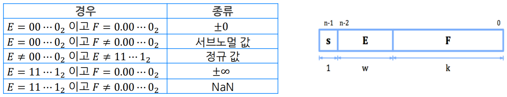
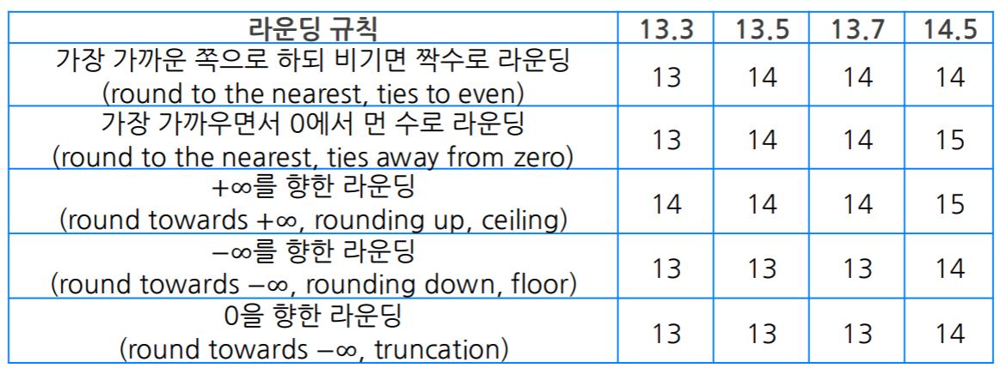
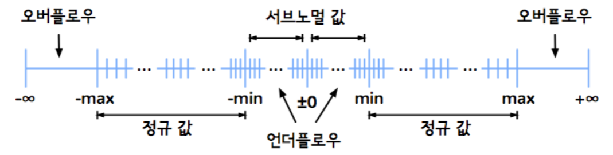
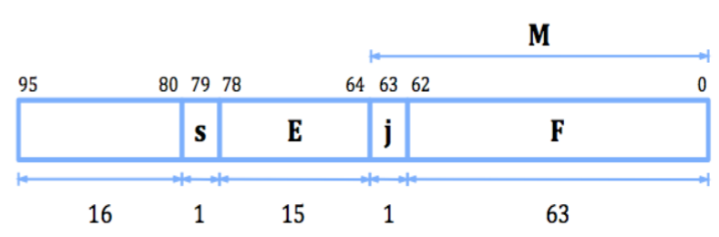

<!DOCTYPE html>
<html><head><title>03. FP Representation</title><meta charSet="utf-8"/><meta name="viewport" content="width=device-width, initial-scale=1.0"/><meta property="og:title" content="03. FP Representation"/><meta property="og:description" content="서울대학교 컴퓨터공학과 이재진 교수님의 &amp;quot;확장형 고성능 컴퓨팅&amp;quot; 강의를 필기한 내용입니다. 목차 FP Representation § 실수는 무한대이기 때문에 64 (32) bit 로 나타내는 것 (FP) 은 어쩔 수 없이 one-to-many 관계이다."/><meta property="og:image" content="https://mdg.haeramk.im/static/og-image.png"/><meta property="og:width" content="1200"/><meta property="og:height" content="675"/><link rel="icon" href="../../../../../static/icon.png"/><meta name="description" content="서울대학교 컴퓨터공학과 이재진 교수님의 &amp;quot;확장형 고성능 컴퓨팅&amp;quot; 강의를 필기한 내용입니다. 목차 FP Representation § 실수는 무한대이기 때문에 64 (32) bit 로 나타내는 것 (FP) 은 어쩔 수 없이 one-to-many 관계이다."/><meta name="generator" content="Quartz"/><link rel="preconnect" href="https://fonts.googleapis.com"/><link rel="preconnect" href="https://fonts.gstatic.com"/><link href="../../../../../index.css" rel="stylesheet" type="text/css" spa-preserve/><link href="https://cdn.jsdelivr.net/npm/katex@0.16.0/dist/katex.min.css" rel="stylesheet" type="text/css" spa-preserve/><link href="https://fonts.googleapis.com/css2?family=IBM Plex Mono&amp;family=Gowun Batang:wght@400;700&amp;family=Gowun Dodum:ital,wght@0,400;0,600;1,400;1,600&amp;display=swap" rel="stylesheet" type="text/css" spa-preserve/><script src="../../../../../prescript.js" type="application/javascript" spa-preserve></script><script type="application/javascript" spa-preserve>const fetchData = fetch(`../../../../../static/contentIndex.json`).then(data => data.json())</script></head><body data-slug="gardens/arch/originals/shpc.fall.2024.cse.snu.ac.kr/lectures/03.-FP-Representation"><div id="quartz-root" class="page"><div id="quartz-body"><div class="left sidebar"><h1 class="page-title "><a href="../../../../..">Madison Digital Garden</a></h1><div class="spacer mobile-only"></div><div class="search "><div id="search-icon"><p>Search</p><div></div><svg tabIndex="0" aria-labelledby="title desc" role="img" xmlns="http://www.w3.org/2000/svg" viewBox="0 0 19.9 19.7"><title id="title">Search</title><desc id="desc">Search</desc><g class="search-path" fill="none"><path stroke-linecap="square" d="M18.5 18.3l-5.4-5.4"></path><circle cx="8" cy="8" r="7"></circle></g></svg></div><div id="search-container"><div id="search-space"><input autocomplete="off" id="search-bar" name="search" type="text" aria-label="Search for something" placeholder="Search for something"/><div id="results-container"></div></div></div></div><div class="darkmode "><input class="toggle" id="darkmode-toggle" type="checkbox" tabIndex="-1"/><label id="toggle-label-light" for="darkmode-toggle" tabIndex="-1"><svg xmlns="http://www.w3.org/2000/svg" xmlnsXlink="http://www.w3.org/1999/xlink" version="1.1" id="dayIcon" x="0px" y="0px" viewBox="0 0 35 35" style="enable-background:new 0 0 35 35;" xmlSpace="preserve"><title>Light mode</title><path d="M6,17.5C6,16.672,5.328,16,4.5,16h-3C0.672,16,0,16.672,0,17.5    S0.672,19,1.5,19h3C5.328,19,6,18.328,6,17.5z M7.5,26c-0.414,0-0.789,0.168-1.061,0.439l-2,2C4.168,28.711,4,29.086,4,29.5    C4,30.328,4.671,31,5.5,31c0.414,0,0.789-0.168,1.06-0.44l2-2C8.832,28.289,9,27.914,9,27.5C9,26.672,8.329,26,7.5,26z M17.5,6    C18.329,6,19,5.328,19,4.5v-3C19,0.672,18.329,0,17.5,0S16,0.672,16,1.5v3C16,5.328,16.671,6,17.5,6z M27.5,9    c0.414,0,0.789-0.168,1.06-0.439l2-2C30.832,6.289,31,5.914,31,5.5C31,4.672,30.329,4,29.5,4c-0.414,0-0.789,0.168-1.061,0.44    l-2,2C26.168,6.711,26,7.086,26,7.5C26,8.328,26.671,9,27.5,9z M6.439,8.561C6.711,8.832,7.086,9,7.5,9C8.328,9,9,8.328,9,7.5    c0-0.414-0.168-0.789-0.439-1.061l-2-2C6.289,4.168,5.914,4,5.5,4C4.672,4,4,4.672,4,5.5c0,0.414,0.168,0.789,0.439,1.06    L6.439,8.561z M33.5,16h-3c-0.828,0-1.5,0.672-1.5,1.5s0.672,1.5,1.5,1.5h3c0.828,0,1.5-0.672,1.5-1.5S34.328,16,33.5,16z     M28.561,26.439C28.289,26.168,27.914,26,27.5,26c-0.828,0-1.5,0.672-1.5,1.5c0,0.414,0.168,0.789,0.439,1.06l2,2    C28.711,30.832,29.086,31,29.5,31c0.828,0,1.5-0.672,1.5-1.5c0-0.414-0.168-0.789-0.439-1.061L28.561,26.439z M17.5,29    c-0.829,0-1.5,0.672-1.5,1.5v3c0,0.828,0.671,1.5,1.5,1.5s1.5-0.672,1.5-1.5v-3C19,29.672,18.329,29,17.5,29z M17.5,7    C11.71,7,7,11.71,7,17.5S11.71,28,17.5,28S28,23.29,28,17.5S23.29,7,17.5,7z M17.5,25c-4.136,0-7.5-3.364-7.5-7.5    c0-4.136,3.364-7.5,7.5-7.5c4.136,0,7.5,3.364,7.5,7.5C25,21.636,21.636,25,17.5,25z"></path></svg></label><label id="toggle-label-dark" for="darkmode-toggle" tabIndex="-1"><svg xmlns="http://www.w3.org/2000/svg" xmlnsXlink="http://www.w3.org/1999/xlink" version="1.1" id="nightIcon" x="0px" y="0px" viewBox="0 0 100 100" style="enable-background='new 0 0 100 100'" xmlSpace="preserve"><title>Dark mode</title><path d="M96.76,66.458c-0.853-0.852-2.15-1.064-3.23-0.534c-6.063,2.991-12.858,4.571-19.655,4.571  C62.022,70.495,50.88,65.88,42.5,57.5C29.043,44.043,25.658,23.536,34.076,6.47c0.532-1.08,0.318-2.379-0.534-3.23  c-0.851-0.852-2.15-1.064-3.23-0.534c-4.918,2.427-9.375,5.619-13.246,9.491c-9.447,9.447-14.65,22.008-14.65,35.369  c0,13.36,5.203,25.921,14.65,35.368s22.008,14.65,35.368,14.65c13.361,0,25.921-5.203,35.369-14.65  c3.872-3.871,7.064-8.328,9.491-13.246C97.826,68.608,97.611,67.309,96.76,66.458z"></path></svg></label></div></div><div class="center"><div class="page-header"><div class="popover-hint"><h1 class="article-title ">03. FP Representation</h1><p class="content-meta ">Sep 09, 2024, 9 min read</p><ul class="tags "><li><a href="../../../../../tags/originals" class="internal tag-link">#originals</a></li><li><a href="../../../../../tags/snu-shpc24f" class="internal tag-link">#snu-shpc24f</a></li></ul></div></div><article class="popover-hint"><blockquote class="callout" data-callout="info">
<div class="callout-title">
                  <div class="callout-icon"><svg xmlns="http://www.w3.org/2000/svg" width="100%" height="100%" viewBox="0 0 24 24" fill="none" stroke="currentColor" stroke-width="2" stroke-linecap="round" stroke-linejoin="round"><circle cx="12" cy="12" r="10"></circle><line x1="12" y1="16" x2="12" y2="12"></line><line x1="12" y1="8" x2="12.01" y2="8"></line></svg></div>
                  <div class="callout-title-inner"><p>서울대학교 컴퓨터공학과 이재진 교수님의 &quot;확장형 고성능 컴퓨팅&quot; 강의를 필기한 내용입니다. </p></div>
                  
                </div>
<ul>
<li><a href="../../../../../gardens/arch/originals/shpc.fall.2024.cse.snu.ac.kr/(SNU-CSE)-Scalable-High-Performance-Computing" class="internal" data-slug="gardens/arch/originals/shpc.fall.2024.cse.snu.ac.kr/(SNU-CSE)-Scalable-High-Performance-Computing">목차</a></li>
</ul>
</blockquote>
<h2 id="fp-representation">FP Representation<a aria-hidden="true" tabindex="-1" href="#fp-representation" class="internal"> §</a></h2>
<ul>
<li>실수는 무한대이기 때문에 64 (32) bit 로 나타내는 것 (<a href="../../../../../gardens/arch/originals/shpc.fall.2024.cse.snu.ac.kr/drafts/03/IEEE-754-(Arch-FP)" class="internal" data-slug="gardens/arch/originals/shpc.fall.2024.cse.snu.ac.kr/drafts/03/IEEE-754-(Arch-FP)">FP</a>) 은 어쩔 수 없이 one-to-many 관계이다.</li>
<li>어쨌든 이거랑 관련있는 표준은 IEEE 754 이다.</li>
<li><a href="../../../../../gardens/arch/originals/shpc.fall.2024.cse.snu.ac.kr/drafts/03/Scientific-notation-(Arch-FP)" class="internal" data-slug="gardens/arch/originals/shpc.fall.2024.cse.snu.ac.kr/drafts/03/Scientific-notation-(Arch-FP)">Scientific notation</a>
<ul>
<li>용어정리: <span class="math math-inline"><span class="katex"><span class="katex-html" aria-hidden="true"><span class="base"><span class="strut" style="height:0.6667em;vertical-align:-0.0833em;"></span><span class="mord mathnormal">m</span><span class="mspace" style="margin-right:0.2222em;"></span><span class="mbin">×</span><span class="mspace" style="margin-right:0.2222em;"></span></span><span class="base"><span class="strut" style="height:0.6944em;"></span><span class="mord"><span class="mord mathnormal">b</span><span class="msupsub"><span class="vlist-t"><span class="vlist-r"><span class="vlist" style="height:0.6644em;"><span style="top:-3.063em;margin-right:0.05em;"><span class="pstrut" style="height:2.7em;"></span><span class="sizing reset-size6 size3 mtight"><span class="mord mtight"><span class="mord mathnormal mtight">e</span></span></span></span></span></span></span></span></span></span></span></span></span>
<ul>
<li><span class="math math-inline"><span class="katex"><span class="katex-html" aria-hidden="true"><span class="base"><span class="strut" style="height:0.4306em;"></span><span class="mord mathnormal">m</span></span></span></span></span>: <a href="../../../../../gardens/arch/originals/shpc.fall.2024.cse.snu.ac.kr/drafts/03/Scientific-notation-(Arch-FP)" class="internal" data-slug="gardens/arch/originals/shpc.fall.2024.cse.snu.ac.kr/drafts/03/Scientific-notation-(Arch-FP)">Mantissa</a> (가수)</li>
<li><span class="math math-inline"><span class="katex"><span class="katex-html" aria-hidden="true"><span class="base"><span class="strut" style="height:0.6944em;"></span><span class="mord mathnormal">b</span></span></span></span></span>: <a href="../../../../../gardens/arch/originals/shpc.fall.2024.cse.snu.ac.kr/drafts/03/Scientific-notation-(Arch-FP)" class="internal" data-slug="gardens/arch/originals/shpc.fall.2024.cse.snu.ac.kr/drafts/03/Scientific-notation-(Arch-FP)">Base</a> (기수)</li>
<li><span class="math math-inline"><span class="katex"><span class="katex-html" aria-hidden="true"><span class="base"><span class="strut" style="height:0.4306em;"></span><span class="mord mathnormal">e</span></span></span></span></span>: <a href="../../../../../gardens/arch/originals/shpc.fall.2024.cse.snu.ac.kr/drafts/03/Scientific-notation-(Arch-FP)" class="internal" data-slug="gardens/arch/originals/shpc.fall.2024.cse.snu.ac.kr/drafts/03/Scientific-notation-(Arch-FP)">Exponent</a> (지수)</li>
</ul>
</li>
<li>그냥 scientific notation 에는 소수점의 제한이 없고, <span class="math math-inline"><span class="katex"><span class="katex-html" aria-hidden="true"><span class="base"><span class="strut" style="height:0.4306em;"></span><span class="mord mathnormal">m</span></span></span></span></span> 을 <span class="math math-inline"><span class="katex"><span class="katex-html" aria-hidden="true"><span class="base"><span class="strut" style="height:0.7804em;vertical-align:-0.136em;"></span><span class="mord">1</span><span class="mspace" style="margin-right:0.2778em;"></span><span class="mrel">≤</span><span class="mspace" style="margin-right:0.2778em;"></span></span><span class="base"><span class="strut" style="height:0.5782em;vertical-align:-0.0391em;"></span><span class="mord mathnormal">m</span><span class="mspace" style="margin-right:0.2778em;"></span><span class="mrel">&lt;</span><span class="mspace" style="margin-right:0.2778em;"></span></span><span class="base"><span class="strut" style="height:0.6944em;"></span><span class="mord mathnormal">b</span></span></span></span></span> 로 제한하는 표기법을 <a href="../../../../../gardens/arch/originals/shpc.fall.2024.cse.snu.ac.kr/drafts/03/Scientific-notation-(Arch-FP)" class="internal" data-slug="gardens/arch/originals/shpc.fall.2024.cse.snu.ac.kr/drafts/03/Scientific-notation-(Arch-FP)">Normalized scientific notation</a> 라고 한다.</li>
</ul>
</li>
<li><span class="math math-inline"><span class="katex"><span class="katex-html" aria-hidden="true"><span class="base"><span class="strut" style="height:0.6833em;"></span><span class="mord mathnormal" style="margin-right:0.10903em;">N</span></span></span></span></span> 개의 숫자를 사용하여 실수를 표현할 때,
<ul>
<li>고정소수점 (<a href="../../../../../gardens/arch/originals/shpc.fall.2024.cse.snu.ac.kr/drafts/03/Floating-point-Representation-(Arch-FP)" class="internal" data-slug="gardens/arch/originals/shpc.fall.2024.cse.snu.ac.kr/drafts/03/Floating-point-Representation-(Arch-FP)">Fixed-point</a>): 말 그대로 소수점의 위치를 고정시켜놓은 것
<ul>
<li>가령 8개의 digit 을 사용하고, 소수점 아래 자리수가 2 인 고정소수점의 표현은 <span class="math math-inline"><span class="katex"><span class="katex-html" aria-hidden="true"><span class="base"><span class="strut" style="height:0.6444em;"></span><span class="mord">0.00</span></span></span></span></span> 부터 <span class="math math-inline"><span class="katex"><span class="katex-html" aria-hidden="true"><span class="base"><span class="strut" style="height:0.6444em;"></span><span class="mord">999999.99</span></span></span></span></span> 까지이다.</li>
</ul>
</li>
<li>부동소수점 (<a href="../../../../../gardens/arch/originals/shpc.fall.2024.cse.snu.ac.kr/drafts/03/Floating-point-Representation-(Arch-FP)" class="internal" data-slug="gardens/arch/originals/shpc.fall.2024.cse.snu.ac.kr/drafts/03/Floating-point-Representation-(Arch-FP)">Floating-point</a>): 말 그대로 소수점의 위치를 고정시키지 않은 것
<ul>
<li>가령 마찬가지로 8개의 digit 을 사용한다 했을 때, 부동소수점으로 표현되는 값은 <span class="math math-inline"><span class="katex"><span class="katex-html" aria-hidden="true"><span class="base"><span class="strut" style="height:0.7333em;vertical-align:-0.15em;"></span><span class="mord"><span class="mord mathnormal">m</span><span class="msupsub"><span class="vlist-t vlist-t2"><span class="vlist-r"><span class="vlist" style="height:0.3011em;"><span style="top:-2.55em;margin-left:0em;margin-right:0.05em;"><span class="pstrut" style="height:2.7em;"></span><span class="sizing reset-size6 size3 mtight"><span class="mord mtight"><span class="mord mtight">0</span></span></span></span></span><span class="vlist-s">​</span></span><span class="vlist-r"><span class="vlist" style="height:0.15em;"><span></span></span></span></span></span></span><span class="mord">.</span><span class="mord"><span class="mord mathnormal">m</span><span class="msupsub"><span class="vlist-t vlist-t2"><span class="vlist-r"><span class="vlist" style="height:0.3011em;"><span style="top:-2.55em;margin-left:0em;margin-right:0.05em;"><span class="pstrut" style="height:2.7em;"></span><span class="sizing reset-size6 size3 mtight"><span class="mord mtight"><span class="mord mtight">1</span></span></span></span></span><span class="vlist-s">​</span></span><span class="vlist-r"><span class="vlist" style="height:0.15em;"><span></span></span></span></span></span></span><span class="mord"><span class="mord mathnormal">m</span><span class="msupsub"><span class="vlist-t vlist-t2"><span class="vlist-r"><span class="vlist" style="height:0.3011em;"><span style="top:-2.55em;margin-left:0em;margin-right:0.05em;"><span class="pstrut" style="height:2.7em;"></span><span class="sizing reset-size6 size3 mtight"><span class="mord mtight"><span class="mord mtight">2</span></span></span></span></span><span class="vlist-s">​</span></span><span class="vlist-r"><span class="vlist" style="height:0.15em;"><span></span></span></span></span></span></span><span class="mord"><span class="mord mathnormal">m</span><span class="msupsub"><span class="vlist-t vlist-t2"><span class="vlist-r"><span class="vlist" style="height:0.3011em;"><span style="top:-2.55em;margin-left:0em;margin-right:0.05em;"><span class="pstrut" style="height:2.7em;"></span><span class="sizing reset-size6 size3 mtight"><span class="mord mtight"><span class="mord mtight">3</span></span></span></span></span><span class="vlist-s">​</span></span><span class="vlist-r"><span class="vlist" style="height:0.15em;"><span></span></span></span></span></span></span><span class="mord"><span class="mord mathnormal">m</span><span class="msupsub"><span class="vlist-t vlist-t2"><span class="vlist-r"><span class="vlist" style="height:0.3011em;"><span style="top:-2.55em;margin-left:0em;margin-right:0.05em;"><span class="pstrut" style="height:2.7em;"></span><span class="sizing reset-size6 size3 mtight"><span class="mord mtight"><span class="mord mtight">4</span></span></span></span></span><span class="vlist-s">​</span></span><span class="vlist-r"><span class="vlist" style="height:0.15em;"><span></span></span></span></span></span></span><span class="mord"><span class="mord mathnormal">m</span><span class="msupsub"><span class="vlist-t vlist-t2"><span class="vlist-r"><span class="vlist" style="height:0.3011em;"><span style="top:-2.55em;margin-left:0em;margin-right:0.05em;"><span class="pstrut" style="height:2.7em;"></span><span class="sizing reset-size6 size3 mtight"><span class="mord mtight"><span class="mord mtight">5</span></span></span></span></span><span class="vlist-s">​</span></span><span class="vlist-r"><span class="vlist" style="height:0.15em;"><span></span></span></span></span></span></span><span class="mspace" style="margin-right:0.2222em;"></span><span class="mbin">×</span><span class="mspace" style="margin-right:0.2222em;"></span></span><span class="base"><span class="strut" style="height:0.6644em;"></span><span class="mord">1</span><span class="mord"><span class="mord">0</span><span class="msupsub"><span class="vlist-t"><span class="vlist-r"><span class="vlist" style="height:0.6644em;"><span style="top:-3.063em;margin-right:0.05em;"><span class="pstrut" style="height:2.7em;"></span><span class="sizing reset-size6 size3 mtight"><span class="mord mtight"><span class="mord mtight"><span class="mord mathnormal mtight">e</span><span class="msupsub"><span class="vlist-t vlist-t2"><span class="vlist-r"><span class="vlist" style="height:0.3173em;"><span style="top:-2.357em;margin-left:0em;margin-right:0.0714em;"><span class="pstrut" style="height:2.5em;"></span><span class="sizing reset-size3 size1 mtight"><span class="mord mtight"><span class="mord mtight">0</span></span></span></span></span><span class="vlist-s">​</span></span><span class="vlist-r"><span class="vlist" style="height:0.143em;"><span></span></span></span></span></span></span><span class="mord mtight"><span class="mord mathnormal mtight">e</span><span class="msupsub"><span class="vlist-t vlist-t2"><span class="vlist-r"><span class="vlist" style="height:0.3173em;"><span style="top:-2.357em;margin-left:0em;margin-right:0.0714em;"><span class="pstrut" style="height:2.5em;"></span><span class="sizing reset-size3 size1 mtight"><span class="mord mtight"><span class="mord mtight">1</span></span></span></span></span><span class="vlist-s">​</span></span><span class="vlist-r"><span class="vlist" style="height:0.143em;"><span></span></span></span></span></span></span></span></span></span></span></span></span></span></span></span></span></span></span> 형태이고, 범위는 <span class="math math-inline"><span class="katex"><span class="katex-html" aria-hidden="true"><span class="base"><span class="strut" style="height:0.7278em;vertical-align:-0.0833em;"></span><span class="mord">0.00000</span><span class="mspace" style="margin-right:0.2222em;"></span><span class="mbin">×</span><span class="mspace" style="margin-right:0.2222em;"></span></span><span class="base"><span class="strut" style="height:0.8141em;"></span><span class="mord">1</span><span class="mord"><span class="mord">0</span><span class="msupsub"><span class="vlist-t"><span class="vlist-r"><span class="vlist" style="height:0.8141em;"><span style="top:-3.063em;margin-right:0.05em;"><span class="pstrut" style="height:2.7em;"></span><span class="sizing reset-size6 size3 mtight"><span class="mord mtight"><span class="mord mtight">00</span></span></span></span></span></span></span></span></span></span></span></span></span> 부터 <span class="math math-inline"><span class="katex"><span class="katex-html" aria-hidden="true"><span class="base"><span class="strut" style="height:0.7278em;vertical-align:-0.0833em;"></span><span class="mord">9.99999</span><span class="mspace" style="margin-right:0.2222em;"></span><span class="mbin">×</span><span class="mspace" style="margin-right:0.2222em;"></span></span><span class="base"><span class="strut" style="height:0.8141em;"></span><span class="mord">1</span><span class="mord"><span class="mord">0</span><span class="msupsub"><span class="vlist-t"><span class="vlist-r"><span class="vlist" style="height:0.8141em;"><span style="top:-3.063em;margin-right:0.05em;"><span class="pstrut" style="height:2.7em;"></span><span class="sizing reset-size6 size3 mtight"><span class="mord mtight"><span class="mord mtight">99</span></span></span></span></span></span></span></span></span></span></span></span></span> 까지 이다.</li>
</ul>
</li>
</ul>
</li>
<li>정밀도 (<a href="../../../../../gardens/arch/originals/shpc.fall.2024.cse.snu.ac.kr/drafts/03/Floating-point-Representation-(Arch-FP)" class="internal" data-slug="gardens/arch/originals/shpc.fall.2024.cse.snu.ac.kr/drafts/03/Floating-point-Representation-(Arch-FP)">Precision</a>) 는 실수를 표현하는데 몇개의 bit 를 사용했냐 정도로 생각하면 된다.
<ul>
<li>Precision 은 (IEEE 754 에 따르면) 16, 32, 64 .. 이렇게 있다.
<ul>
<li>16 은 <em>half</em>, 32 은 <em>single</em> (<code>float</code>), 64 는 <em>double</em> (<code>double</code>), 128 은 <em>quadruple</em>, 258 은 <em>octuple</em> 이런식으로 부른다.</li>
</ul>
</li>
<li>십진수로 바꿔서 생각했을 때, single precision 의 경우에는 실수를 표현하는 숫자의 개수 (위에서 <span class="math math-inline"><span class="katex"><span class="katex-html" aria-hidden="true"><span class="base"><span class="strut" style="height:0.6833em;"></span><span class="mord mathnormal" style="margin-right:0.10903em;">N</span></span></span></span></span>) 이 7개이고, double precision 의 경우에는 15개이다.</li>
</ul>
</li>
</ul>
<h2 id="ieee-754">IEEE 754<a aria-hidden="true" tabindex="-1" href="#ieee-754" class="internal"> §</a></h2>
<h3 id="format">Format<a aria-hidden="true" tabindex="-1" href="#format" class="internal"> §</a></h3>
<p></p>
<ul>
<li>위 그림의 오른쪽 처럼 Sign bit (<span class="math math-inline"><span class="katex"><span class="katex-html" aria-hidden="true"><span class="base"><span class="strut" style="height:0.4306em;"></span><span class="mord mathnormal">s</span></span></span></span></span>, 크기는 1-bit) + Exponent (<span class="math math-inline"><span class="katex"><span class="katex-html" aria-hidden="true"><span class="base"><span class="strut" style="height:0.6833em;"></span><span class="mord mathnormal" style="margin-right:0.05764em;">E</span></span></span></span></span>, 크기는 <span class="math math-inline"><span class="katex"><span class="katex-html" aria-hidden="true"><span class="base"><span class="strut" style="height:0.4306em;"></span><span class="mord mathnormal" style="margin-right:0.02691em;">w</span></span></span></span></span>-bit) + Fraction (<span class="math math-inline"><span class="katex"><span class="katex-html" aria-hidden="true"><span class="base"><span class="strut" style="height:0.6833em;"></span><span class="mord mathnormal" style="margin-right:0.13889em;">F</span></span></span></span></span>, 크기는 <span class="math math-inline"><span class="katex"><span class="katex-html" aria-hidden="true"><span class="base"><span class="strut" style="height:0.6944em;"></span><span class="mord mathnormal" style="margin-right:0.03148em;">k</span></span></span></span></span>-bit) format 이다.</li>
<li>Fraction 은 mantissa 를 보정한 값 (<span class="math math-inline"><span class="katex"><span class="katex-html" aria-hidden="true"><span class="base"><span class="strut" style="height:0.8889em;vertical-align:-0.1944em;"></span><span class="mord mathnormal" style="margin-right:0.10764em;">f</span><span class="mord mathnormal" style="margin-right:0.02778em;">r</span><span class="mord mathnormal">a</span><span class="mord mathnormal">c</span><span class="mspace" style="margin-right:0.2778em;"></span><span class="mrel">=</span><span class="mspace" style="margin-right:0.2778em;"></span></span><span class="base"><span class="strut" style="height:0.6984em;vertical-align:-0.0833em;"></span><span class="mord mathnormal">man</span><span class="mord mathnormal">t</span><span class="mspace" style="margin-right:0.2222em;"></span><span class="mbin">−</span><span class="mspace" style="margin-right:0.2222em;"></span></span><span class="base"><span class="strut" style="height:0.6444em;"></span><span class="mord">1</span></span></span></span></span>)
<ul>
<li>Mantissa 는 <span class="math math-inline"><span class="katex"><span class="katex-html" aria-hidden="true"><span class="base"><span class="strut" style="height:0.7804em;vertical-align:-0.136em;"></span><span class="mord">1</span><span class="mspace" style="margin-right:0.2778em;"></span><span class="mrel">≤</span><span class="mspace" style="margin-right:0.2778em;"></span></span><span class="base"><span class="strut" style="height:0.5782em;vertical-align:-0.0391em;"></span><span class="mord mathnormal">m</span><span class="mspace" style="margin-right:0.2778em;"></span><span class="mrel">&lt;</span><span class="mspace" style="margin-right:0.2778em;"></span></span><span class="base"><span class="strut" style="height:0.6444em;"></span><span class="mord">2</span></span></span></span></span> 이기 때문에 1을 빼서 fraction 은 <span class="math math-inline"><span class="katex"><span class="katex-html" aria-hidden="true"><span class="base"><span class="strut" style="height:0.7804em;vertical-align:-0.136em;"></span><span class="mord">0</span><span class="mspace" style="margin-right:0.2778em;"></span><span class="mrel">≤</span><span class="mspace" style="margin-right:0.2778em;"></span></span><span class="base"><span class="strut" style="height:0.8889em;vertical-align:-0.1944em;"></span><span class="mord mathnormal" style="margin-right:0.10764em;">f</span><span class="mspace" style="margin-right:0.2778em;"></span><span class="mrel">&lt;</span><span class="mspace" style="margin-right:0.2778em;"></span></span><span class="base"><span class="strut" style="height:0.6444em;"></span><span class="mord">1</span></span></span></span></span> 에 들어오도록 한 것</li>
<li>이렇게 보정한 것을 <a href="../../../../../gardens/arch/originals/shpc.fall.2024.cse.snu.ac.kr/drafts/03/IEEE-754-(Arch-FP)" class="internal" data-slug="gardens/arch/originals/shpc.fall.2024.cse.snu.ac.kr/drafts/03/IEEE-754-(Arch-FP)">Normalized value</a> 혹은 <em>Normal value</em> (정규값) 이라고 한다.</li>
</ul>
</li>
<li>Exponent 는 <span class="math math-inline"><span class="katex"><span class="katex-html" aria-hidden="true"><span class="base"><span class="strut" style="height:0.6944em;"></span><span class="mord mathnormal">bia</span><span class="mord mathnormal">s</span></span></span></span></span> 를 더한 것
<ul>
<li>Fraction 은 unsigned 이기 때문에 음수 exponent 에 <span class="math math-inline"><span class="katex"><span class="katex-html" aria-hidden="true"><span class="base"><span class="strut" style="height:0.6944em;"></span><span class="mord mathnormal">bia</span><span class="mord mathnormal">s</span></span></span></span></span> 를 더해서 양수로 만듦</li>
<li>이 <span class="math math-inline"><span class="katex"><span class="katex-html" aria-hidden="true"><span class="base"><span class="strut" style="height:0.6944em;"></span><span class="mord mathnormal">bia</span><span class="mord mathnormal">s</span></span></span></span></span> 는 <span class="math math-inline"><span class="katex"><span class="katex-html" aria-hidden="true"><span class="base"><span class="strut" style="height:0.7477em;vertical-align:-0.0833em;"></span><span class="mord"><span class="mord">2</span><span class="msupsub"><span class="vlist-t"><span class="vlist-r"><span class="vlist" style="height:0.6644em;"><span style="top:-3.063em;margin-right:0.05em;"><span class="pstrut" style="height:2.7em;"></span><span class="sizing reset-size6 size3 mtight"><span class="mord mtight"><span class="mord mathnormal mtight" style="margin-right:0.02691em;">w</span></span></span></span></span></span></span></span></span><span class="mspace" style="margin-right:0.2222em;"></span><span class="mbin">−</span><span class="mspace" style="margin-right:0.2222em;"></span></span><span class="base"><span class="strut" style="height:0.6444em;"></span><span class="mord">1</span></span></span></span></span> 로 구한다.</li>
</ul>
</li>
<li>Exponent 가 모두 0이면 <a href="../../../../../gardens/arch/originals/shpc.fall.2024.cse.snu.ac.kr/drafts/03/IEEE-754-(Arch-FP)" class="internal" data-slug="gardens/arch/originals/shpc.fall.2024.cse.snu.ac.kr/drafts/03/IEEE-754-(Arch-FP)">Sub-normal</a> 으로 아주 작은 값을 표현
<ul>
<li>여기서는 mantissa 를 <span class="math math-inline"><span class="katex"><span class="katex-html" aria-hidden="true"><span class="base"><span class="strut" style="height:0.6835em;vertical-align:-0.0391em;"></span><span class="mord">0</span><span class="mspace" style="margin-right:0.2778em;"></span><span class="mrel">&lt;</span><span class="mspace" style="margin-right:0.2778em;"></span></span><span class="base"><span class="strut" style="height:0.5782em;vertical-align:-0.0391em;"></span><span class="mord mathnormal">m</span><span class="mspace" style="margin-right:0.2778em;"></span><span class="mrel">&lt;</span><span class="mspace" style="margin-right:0.2778em;"></span></span><span class="base"><span class="strut" style="height:0.6444em;"></span><span class="mord">1</span></span></span></span></span> 사이로 표현</li>
<li>즉, fraction 이 보정되지 않고 (<span class="math math-inline"><span class="katex"><span class="katex-html" aria-hidden="true"><span class="base"><span class="strut" style="height:0.8889em;vertical-align:-0.1944em;"></span><span class="mord mathnormal" style="margin-right:0.10764em;">f</span><span class="mord mathnormal" style="margin-right:0.02778em;">r</span><span class="mord mathnormal">a</span><span class="mord mathnormal">c</span><span class="mspace" style="margin-right:0.2778em;"></span><span class="mrel">=</span><span class="mspace" style="margin-right:0.2778em;"></span></span><span class="base"><span class="strut" style="height:0.6984em;vertical-align:-0.0833em;"></span><span class="mord mathnormal">man</span><span class="mord mathnormal">t</span><span class="mspace" style="margin-right:0.2222em;"></span><span class="mbin">−</span><span class="mspace" style="margin-right:0.2222em;"></span></span><span class="base"><span class="strut" style="height:0.6444em;"></span><span class="mord">1</span></span></span></span></span>) 그냥 mantissa 가 된다.</li>
<li>이렇게 0~1 사이의 값은 보정하지 않고 표현하는 것을 <em>Sub-normal value</em> 혹은 <em>Denormalized value</em> (비정규값) 이라고 한다.</li>
</ul>
</li>
<li>나머지 <span class="math math-inline"><span class="katex"><span class="katex-html" aria-hidden="true"><span class="base"><span class="strut" style="height:0.7278em;vertical-align:-0.0833em;"></span><span class="mord">±</span><span class="mord">0</span></span></span></span></span> 이나 <span class="math math-inline"><span class="katex"><span class="katex-html" aria-hidden="true"><span class="base"><span class="strut" style="height:0.7667em;vertical-align:-0.0833em;"></span><span class="mord">±</span><span class="mord mathnormal" style="margin-right:0.10903em;">N</span><span class="mord mathnormal">a</span><span class="mord mathnormal" style="margin-right:0.10903em;">N</span></span></span></span></span>, <span class="math math-inline"><span class="katex"><span class="katex-html" aria-hidden="true"><span class="base"><span class="strut" style="height:0.8889em;vertical-align:-0.1944em;"></span><span class="mord">±</span><span class="mord mathnormal" style="margin-right:0.07847em;">I</span><span class="mord mathnormal">n</span><span class="mord mathnormal" style="margin-right:0.10764em;">f</span></span></span></span></span> 를 제외하면 나머지는 일반적인 너가 아는 그 실수 (정규화된 값)
<ul>
<li><span class="math math-inline"><span class="katex"><span class="katex-html" aria-hidden="true"><span class="base"><span class="strut" style="height:0.8889em;vertical-align:-0.1944em;"></span><span class="mord mathnormal" style="margin-right:0.05764em;">E</span><span class="mspace" style="margin-right:0.2778em;"></span><span class="mrel"><span class="mrel"><span class="mord vbox"><span class="thinbox"><span class="rlap"><span class="strut" style="height:0.8889em;vertical-align:-0.1944em;"></span><span class="inner"><span class="mord"><span class="mrel"></span></span></span><span class="fix"></span></span></span></span></span><span class="mrel">=</span></span><span class="mspace" style="margin-right:0.2778em;"></span></span><span class="base"><span class="strut" style="height:1em;vertical-align:-0.25em;"></span><span class="mopen">{</span><span class="mord">0</span><span class="mpunct">,</span><span class="mspace" style="margin-right:0.1667em;"></span><span class="mord">0</span><span class="mpunct">,</span><span class="mspace" style="margin-right:0.1667em;"></span><span class="mord">...</span><span class="mclose">}</span></span></span></span></span>, <span class="math math-inline"><span class="katex"><span class="katex-html" aria-hidden="true"><span class="base"><span class="strut" style="height:0.8889em;vertical-align:-0.1944em;"></span><span class="mord mathnormal" style="margin-right:0.13889em;">F</span><span class="mspace" style="margin-right:0.2778em;"></span><span class="mrel"><span class="mrel"><span class="mord vbox"><span class="thinbox"><span class="rlap"><span class="strut" style="height:0.8889em;vertical-align:-0.1944em;"></span><span class="inner"><span class="mord"><span class="mrel"></span></span></span><span class="fix"></span></span></span></span></span><span class="mrel">=</span></span><span class="mspace" style="margin-right:0.2778em;"></span></span><span class="base"><span class="strut" style="height:1em;vertical-align:-0.25em;"></span><span class="mopen">{</span><span class="mord">1</span><span class="mpunct">,</span><span class="mspace" style="margin-right:0.1667em;"></span><span class="mord">1</span><span class="mpunct">,</span><span class="mspace" style="margin-right:0.1667em;"></span><span class="mord">...</span><span class="mclose">}</span></span></span></span></span> 인 경우</li>
</ul>
</li>
</ul>
<h3 id="라운딩">라운딩<a aria-hidden="true" tabindex="-1" href="#라운딩" class="internal"> §</a></h3>
<p></p>
<ul>
<li><a href="../../../../../gardens/arch/originals/shpc.fall.2024.cse.snu.ac.kr/drafts/03/Rounding-(Arch-FP)" class="internal" data-slug="gardens/arch/originals/shpc.fall.2024.cse.snu.ac.kr/drafts/03/Rounding-(Arch-FP)">Rounding</a> 은 반올림 규칙… 인데 그냥 x.5 이상이면 올리는게 아니라 종류가 더 있다 (위 그림)
<ul>
<li>맨 위에가 짝수 라운딩: x.5 의 경우 x 가 짝수가 되게 함
<ul>
<li>IEEE 754 에서는 이 방법을 사용한다.</li>
</ul>
</li>
<li>두번째는 일반적으로 알고 있는 반올림</li>
<li>세번째는 올림이고</li>
<li>네번째는 내림</li>
<li>마지막은 양수면 내림, 음수면 올림</li>
</ul>
</li>
<li>라운딩 오차 (<a href="../../../../../gardens/arch/originals/shpc.fall.2024.cse.snu.ac.kr/drafts/03/Rounding-(Arch-FP)" class="internal" data-slug="gardens/arch/originals/shpc.fall.2024.cse.snu.ac.kr/drafts/03/Rounding-(Arch-FP)">Rounding error</a>, <a href="../../../../../gardens/arch/originals/shpc.fall.2024.cse.snu.ac.kr/drafts/03/Rounding-(Arch-FP)" class="internal" data-slug="gardens/arch/originals/shpc.fall.2024.cse.snu.ac.kr/drafts/03/Rounding-(Arch-FP)">Round-off error</a>) 는 원래 값과 반올림한 값 간의 차이임
<ul>
<li>절대오차 (<a href="../../../../../gardens/arch/originals/shpc.fall.2024.cse.snu.ac.kr/drafts/03/Rounding-(Arch-FP)" class="internal" data-slug="gardens/arch/originals/shpc.fall.2024.cse.snu.ac.kr/drafts/03/Rounding-(Arch-FP)">Absolute error</a>) 는 진짜 값의 차이고</li>
<li>상대오차 (<a href="../../../../../gardens/arch/originals/shpc.fall.2024.cse.snu.ac.kr/drafts/03/Rounding-(Arch-FP)" class="internal" data-slug="gardens/arch/originals/shpc.fall.2024.cse.snu.ac.kr/drafts/03/Rounding-(Arch-FP)">Relative error</a>) 는 절대오차를 원래 값으로 나눈 백분율이다.</li>
</ul>
</li>
<li>IEEE 754 의 이진수 라운딩을 보자
<ul>
<li>소수점 아래 둘째자리로 반올림하는 경우
<ul>
<li><span class="math math-inline"><span class="katex"><span class="katex-html" aria-hidden="true"><span class="base"><span class="strut" style="height:0.7944em;vertical-align:-0.15em;"></span><span class="mord">0.0001</span><span class="mord"><span class="mord">1</span><span class="msupsub"><span class="vlist-t vlist-t2"><span class="vlist-r"><span class="vlist" style="height:0.3011em;"><span style="top:-2.55em;margin-left:0em;margin-right:0.05em;"><span class="pstrut" style="height:2.7em;"></span><span class="sizing reset-size6 size3 mtight"><span class="mord mtight"><span class="mord mtight">2</span></span></span></span></span><span class="vlist-s">​</span></span><span class="vlist-r"><span class="vlist" style="height:0.15em;"><span></span></span></span></span></span></span></span></span></span></span> 는 당연히 가까운 수로 반올림하면 <span class="math math-inline"><span class="katex"><span class="katex-html" aria-hidden="true"><span class="base"><span class="strut" style="height:0.7944em;vertical-align:-0.15em;"></span><span class="mord">0.0</span><span class="mord"><span class="mord">0</span><span class="msupsub"><span class="vlist-t vlist-t2"><span class="vlist-r"><span class="vlist" style="height:0.3011em;"><span style="top:-2.55em;margin-left:0em;margin-right:0.05em;"><span class="pstrut" style="height:2.7em;"></span><span class="sizing reset-size6 size3 mtight"><span class="mord mtight"><span class="mord mtight">2</span></span></span></span></span><span class="vlist-s">​</span></span><span class="vlist-r"><span class="vlist" style="height:0.15em;"><span></span></span></span></span></span></span></span></span></span></span> 가 된다.</li>
<li><span class="math math-inline"><span class="katex"><span class="katex-html" aria-hidden="true"><span class="base"><span class="strut" style="height:0.7944em;vertical-align:-0.15em;"></span><span class="mord">0.001</span><span class="mord"><span class="mord">1</span><span class="msupsub"><span class="vlist-t vlist-t2"><span class="vlist-r"><span class="vlist" style="height:0.3011em;"><span style="top:-2.55em;margin-left:0em;margin-right:0.05em;"><span class="pstrut" style="height:2.7em;"></span><span class="sizing reset-size6 size3 mtight"><span class="mord mtight"><span class="mord mtight">2</span></span></span></span></span><span class="vlist-s">​</span></span><span class="vlist-r"><span class="vlist" style="height:0.15em;"><span></span></span></span></span></span></span></span></span></span></span> 는 <span class="math math-inline"><span class="katex"><span class="katex-html" aria-hidden="true"><span class="base"><span class="strut" style="height:0.7944em;vertical-align:-0.15em;"></span><span class="mord">0.0</span><span class="mord"><span class="mord">1</span><span class="msupsub"><span class="vlist-t vlist-t2"><span class="vlist-r"><span class="vlist" style="height:0.3011em;"><span style="top:-2.55em;margin-left:0em;margin-right:0.05em;"><span class="pstrut" style="height:2.7em;"></span><span class="sizing reset-size6 size3 mtight"><span class="mord mtight"><span class="mord mtight">2</span></span></span></span></span><span class="vlist-s">​</span></span><span class="vlist-r"><span class="vlist" style="height:0.15em;"><span></span></span></span></span></span></span></span></span></span></span> 의 절반인 <span class="math math-inline"><span class="katex"><span class="katex-html" aria-hidden="true"><span class="base"><span class="strut" style="height:0.7944em;vertical-align:-0.15em;"></span><span class="mord">0.00</span><span class="mord"><span class="mord">1</span><span class="msupsub"><span class="vlist-t vlist-t2"><span class="vlist-r"><span class="vlist" style="height:0.3011em;"><span style="top:-2.55em;margin-left:0em;margin-right:0.05em;"><span class="pstrut" style="height:2.7em;"></span><span class="sizing reset-size6 size3 mtight"><span class="mord mtight"><span class="mord mtight">2</span></span></span></span></span><span class="vlist-s">​</span></span><span class="vlist-r"><span class="vlist" style="height:0.15em;"><span></span></span></span></span></span></span></span></span></span></span> 보다 크기 때문에 <span class="math math-inline"><span class="katex"><span class="katex-html" aria-hidden="true"><span class="base"><span class="strut" style="height:0.7944em;vertical-align:-0.15em;"></span><span class="mord">0.0</span><span class="mord"><span class="mord">1</span><span class="msupsub"><span class="vlist-t vlist-t2"><span class="vlist-r"><span class="vlist" style="height:0.3011em;"><span style="top:-2.55em;margin-left:0em;margin-right:0.05em;"><span class="pstrut" style="height:2.7em;"></span><span class="sizing reset-size6 size3 mtight"><span class="mord mtight"><span class="mord mtight">2</span></span></span></span></span><span class="vlist-s">​</span></span><span class="vlist-r"><span class="vlist" style="height:0.15em;"><span></span></span></span></span></span></span></span></span></span></span> 로 반올림된다.</li>
<li><span class="math math-inline"><span class="katex"><span class="katex-html" aria-hidden="true"><span class="base"><span class="strut" style="height:0.7944em;vertical-align:-0.15em;"></span><span class="mord">0.11</span><span class="mord"><span class="mord">1</span><span class="msupsub"><span class="vlist-t vlist-t2"><span class="vlist-r"><span class="vlist" style="height:0.3011em;"><span style="top:-2.55em;margin-left:0em;margin-right:0.05em;"><span class="pstrut" style="height:2.7em;"></span><span class="sizing reset-size6 size3 mtight"><span class="mord mtight"><span class="mord mtight">2</span></span></span></span></span><span class="vlist-s">​</span></span><span class="vlist-r"><span class="vlist" style="height:0.15em;"><span></span></span></span></span></span></span></span></span></span></span> 는 <span class="math math-inline"><span class="katex"><span class="katex-html" aria-hidden="true"><span class="base"><span class="strut" style="height:0.7944em;vertical-align:-0.15em;"></span><span class="mord">1.0</span><span class="mord"><span class="mord">0</span><span class="msupsub"><span class="vlist-t vlist-t2"><span class="vlist-r"><span class="vlist" style="height:0.3011em;"><span style="top:-2.55em;margin-left:0em;margin-right:0.05em;"><span class="pstrut" style="height:2.7em;"></span><span class="sizing reset-size6 size3 mtight"><span class="mord mtight"><span class="mord mtight">2</span></span></span></span></span><span class="vlist-s">​</span></span><span class="vlist-r"><span class="vlist" style="height:0.15em;"><span></span></span></span></span></span></span></span></span></span></span> 와 <span class="math math-inline"><span class="katex"><span class="katex-html" aria-hidden="true"><span class="base"><span class="strut" style="height:0.7944em;vertical-align:-0.15em;"></span><span class="mord">0.1</span><span class="mord"><span class="mord">1</span><span class="msupsub"><span class="vlist-t vlist-t2"><span class="vlist-r"><span class="vlist" style="height:0.3011em;"><span style="top:-2.55em;margin-left:0em;margin-right:0.05em;"><span class="pstrut" style="height:2.7em;"></span><span class="sizing reset-size6 size3 mtight"><span class="mord mtight"><span class="mord mtight">2</span></span></span></span></span><span class="vlist-s">​</span></span><span class="vlist-r"><span class="vlist" style="height:0.15em;"><span></span></span></span></span></span></span></span></span></span></span> 와의 거리가 <span class="math math-inline"><span class="katex"><span class="katex-html" aria-hidden="true"><span class="base"><span class="strut" style="height:0.7944em;vertical-align:-0.15em;"></span><span class="mord">0.00</span><span class="mord"><span class="mord">1</span><span class="msupsub"><span class="vlist-t vlist-t2"><span class="vlist-r"><span class="vlist" style="height:0.3011em;"><span style="top:-2.55em;margin-left:0em;margin-right:0.05em;"><span class="pstrut" style="height:2.7em;"></span><span class="sizing reset-size6 size3 mtight"><span class="mord mtight"><span class="mord mtight">2</span></span></span></span></span><span class="vlist-s">​</span></span><span class="vlist-r"><span class="vlist" style="height:0.15em;"><span></span></span></span></span></span></span></span></span></span></span> 로 같기 때문에, 짝수가 되도록 (즉, LSB 가 0이 되도록) 반올림하면 <span class="math math-inline"><span class="katex"><span class="katex-html" aria-hidden="true"><span class="base"><span class="strut" style="height:0.7944em;vertical-align:-0.15em;"></span><span class="mord">1.0</span><span class="mord"><span class="mord">0</span><span class="msupsub"><span class="vlist-t vlist-t2"><span class="vlist-r"><span class="vlist" style="height:0.3011em;"><span style="top:-2.55em;margin-left:0em;margin-right:0.05em;"><span class="pstrut" style="height:2.7em;"></span><span class="sizing reset-size6 size3 mtight"><span class="mord mtight"><span class="mord mtight">2</span></span></span></span></span><span class="vlist-s">​</span></span><span class="vlist-r"><span class="vlist" style="height:0.15em;"><span></span></span></span></span></span></span></span></span></span></span> 가 된다.</li>
<li><span class="math math-inline"><span class="katex"><span class="katex-html" aria-hidden="true"><span class="base"><span class="strut" style="height:0.7944em;vertical-align:-0.15em;"></span><span class="mord">0.10</span><span class="mord"><span class="mord">1</span><span class="msupsub"><span class="vlist-t vlist-t2"><span class="vlist-r"><span class="vlist" style="height:0.3011em;"><span style="top:-2.55em;margin-left:0em;margin-right:0.05em;"><span class="pstrut" style="height:2.7em;"></span><span class="sizing reset-size6 size3 mtight"><span class="mord mtight"><span class="mord mtight">2</span></span></span></span></span><span class="vlist-s">​</span></span><span class="vlist-r"><span class="vlist" style="height:0.15em;"><span></span></span></span></span></span></span></span></span></span></span> 는 <span class="math math-inline"><span class="katex"><span class="katex-html" aria-hidden="true"><span class="base"><span class="strut" style="height:0.7944em;vertical-align:-0.15em;"></span><span class="mord">0.1</span><span class="mord"><span class="mord">1</span><span class="msupsub"><span class="vlist-t vlist-t2"><span class="vlist-r"><span class="vlist" style="height:0.3011em;"><span style="top:-2.55em;margin-left:0em;margin-right:0.05em;"><span class="pstrut" style="height:2.7em;"></span><span class="sizing reset-size6 size3 mtight"><span class="mord mtight"><span class="mord mtight">2</span></span></span></span></span><span class="vlist-s">​</span></span><span class="vlist-r"><span class="vlist" style="height:0.15em;"><span></span></span></span></span></span></span></span></span></span></span> 와 <span class="math math-inline"><span class="katex"><span class="katex-html" aria-hidden="true"><span class="base"><span class="strut" style="height:0.7944em;vertical-align:-0.15em;"></span><span class="mord">0.1</span><span class="mord"><span class="mord">0</span><span class="msupsub"><span class="vlist-t vlist-t2"><span class="vlist-r"><span class="vlist" style="height:0.3011em;"><span style="top:-2.55em;margin-left:0em;margin-right:0.05em;"><span class="pstrut" style="height:2.7em;"></span><span class="sizing reset-size6 size3 mtight"><span class="mord mtight"><span class="mord mtight">2</span></span></span></span></span><span class="vlist-s">​</span></span><span class="vlist-r"><span class="vlist" style="height:0.15em;"><span></span></span></span></span></span></span></span></span></span></span> 와의 거리가 <span class="math math-inline"><span class="katex"><span class="katex-html" aria-hidden="true"><span class="base"><span class="strut" style="height:0.7944em;vertical-align:-0.15em;"></span><span class="mord">0.00</span><span class="mord"><span class="mord">1</span><span class="msupsub"><span class="vlist-t vlist-t2"><span class="vlist-r"><span class="vlist" style="height:0.3011em;"><span style="top:-2.55em;margin-left:0em;margin-right:0.05em;"><span class="pstrut" style="height:2.7em;"></span><span class="sizing reset-size6 size3 mtight"><span class="mord mtight"><span class="mord mtight">2</span></span></span></span></span><span class="vlist-s">​</span></span><span class="vlist-r"><span class="vlist" style="height:0.15em;"><span></span></span></span></span></span></span></span></span></span></span> 로 같기 떄문에 짝수가 되도록 반올림하면 <span class="math math-inline"><span class="katex"><span class="katex-html" aria-hidden="true"><span class="base"><span class="strut" style="height:0.7944em;vertical-align:-0.15em;"></span><span class="mord">0.1</span><span class="mord"><span class="mord">0</span><span class="msupsub"><span class="vlist-t vlist-t2"><span class="vlist-r"><span class="vlist" style="height:0.3011em;"><span style="top:-2.55em;margin-left:0em;margin-right:0.05em;"><span class="pstrut" style="height:2.7em;"></span><span class="sizing reset-size6 size3 mtight"><span class="mord mtight"><span class="mord mtight">2</span></span></span></span></span><span class="vlist-s">​</span></span><span class="vlist-r"><span class="vlist" style="height:0.15em;"><span></span></span></span></span></span></span></span></span></span></span> 가 된다.</li>
</ul>
</li>
</ul>
</li>
</ul>
<h3 id="overflow-underflow">Overflow, Underflow<a aria-hidden="true" tabindex="-1" href="#overflow-underflow" class="internal"> §</a></h3>
<p></p>
<ul>
<li><a href="../../../../../gardens/arch/originals/shpc.fall.2024.cse.snu.ac.kr/drafts/03/IEEE-754-(Arch-FP)" class="internal" data-slug="gardens/arch/originals/shpc.fall.2024.cse.snu.ac.kr/drafts/03/IEEE-754-(Arch-FP)">Overflow</a> 정규값을 넘어가는 범위를 overflow 라고 하고 이건 <span class="math math-inline"><span class="katex"><span class="katex-html" aria-hidden="true"><span class="base"><span class="strut" style="height:0.8889em;vertical-align:-0.1944em;"></span><span class="mord">±</span><span class="mord mathnormal" style="margin-right:0.07847em;">I</span><span class="mord mathnormal">n</span><span class="mord mathnormal" style="margin-right:0.10764em;">f</span></span></span></span></span> 로 표현
<ul>
<li><span class="math math-inline"><span class="katex"><span class="katex-html" aria-hidden="true"><span class="base"><span class="strut" style="height:0.8889em;vertical-align:-0.1944em;"></span><span class="mord mathnormal" style="margin-right:0.07847em;">I</span><span class="mord mathnormal">n</span><span class="mord mathnormal" style="margin-right:0.10764em;">f</span></span></span></span></span> 에 대한 연산은 static rule 로 처리됨
<ul>
<li>가령 <span class="math math-inline"><span class="katex"><span class="katex-html" aria-hidden="true"><span class="base"><span class="strut" style="height:0.8889em;vertical-align:-0.1944em;"></span><span class="mord">+</span><span class="mord mathnormal" style="margin-right:0.07847em;">I</span><span class="mord mathnormal">n</span><span class="mord mathnormal" style="margin-right:0.10764em;">f</span></span></span></span></span> 와 정규값 간의 대소비교는 무조건 <span class="math math-inline"><span class="katex"><span class="katex-html" aria-hidden="true"><span class="base"><span class="strut" style="height:0.8889em;vertical-align:-0.1944em;"></span><span class="mord">+</span><span class="mord mathnormal" style="margin-right:0.07847em;">I</span><span class="mord mathnormal">n</span><span class="mord mathnormal" style="margin-right:0.10764em;">f</span></span></span></span></span> 가 크는 등</li>
</ul>
</li>
<li>Binary representation 은 위에서 설명한 대로 <span class="math math-inline"><span class="katex"><span class="katex-html" aria-hidden="true"><span class="base"><span class="strut" style="height:0.6833em;"></span><span class="mord mathnormal" style="margin-right:0.05764em;">E</span><span class="mspace" style="margin-right:0.2778em;"></span><span class="mrel">=</span><span class="mspace" style="margin-right:0.2778em;"></span></span><span class="base"><span class="strut" style="height:1em;vertical-align:-0.25em;"></span><span class="mopen">{</span><span class="mord">1</span><span class="mpunct">,</span><span class="mspace" style="margin-right:0.1667em;"></span><span class="mord">1</span><span class="mpunct">,</span><span class="mspace" style="margin-right:0.1667em;"></span><span class="mord">1</span><span class="mpunct">,</span><span class="mspace" style="margin-right:0.1667em;"></span><span class="mord">...</span><span class="mclose">}</span></span></span></span></span> 이고 <span class="math math-inline"><span class="katex"><span class="katex-html" aria-hidden="true"><span class="base"><span class="strut" style="height:0.6833em;"></span><span class="mord mathnormal" style="margin-right:0.13889em;">F</span><span class="mspace" style="margin-right:0.2778em;"></span><span class="mrel">=</span><span class="mspace" style="margin-right:0.2778em;"></span></span><span class="base"><span class="strut" style="height:1em;vertical-align:-0.25em;"></span><span class="mopen">{</span><span class="mord">0</span><span class="mpunct">,</span><span class="mspace" style="margin-right:0.1667em;"></span><span class="mord">0</span><span class="mpunct">,</span><span class="mspace" style="margin-right:0.1667em;"></span><span class="mord">0</span><span class="mpunct">,</span><span class="mspace" style="margin-right:0.1667em;"></span><span class="mord">...</span><span class="mclose">}</span></span></span></span></span> 일 때이다.</li>
</ul>
</li>
<li><a href="../../../../../gardens/arch/originals/shpc.fall.2024.cse.snu.ac.kr/drafts/03/IEEE-754-(Arch-FP)" class="internal" data-slug="gardens/arch/originals/shpc.fall.2024.cse.snu.ac.kr/drafts/03/IEEE-754-(Arch-FP)">Underflow</a>: Subnormal 보다 작아지는 범위는 underflow 라고 함
<ul>
<li>즉, normalized value 의 min 보다 더 작은 값을 표현하기 위해 subnormal value 가 완충제의 역할로 정의된 것이고</li>
<li>이것보다도 더 작은 값들에 대해 underflow 가 나는 것</li>
<li>Underflow 시에는 제일 가까운 subnormal 혹은 0 으로 라운딩한다.</li>
</ul>
</li>
</ul>
<h3 id="not-a-number-nan">Not a Number (NaN)<a aria-hidden="true" tabindex="-1" href="#not-a-number-nan" class="internal"> §</a></h3>
<ul>
<li>뭐 <span class="math math-inline"><span class="katex"><span class="katex-html" aria-hidden="true"><span class="base"><span class="strut" style="height:0.7278em;vertical-align:-0.0833em;"></span><span class="mord">0</span><span class="mspace" style="margin-right:0.2222em;"></span><span class="mbin">÷</span><span class="mspace" style="margin-right:0.2222em;"></span></span><span class="base"><span class="strut" style="height:0.6444em;"></span><span class="mord">0</span></span></span></span></span> 와 같은 경우 <a href="../../../../../gardens/arch/originals/shpc.fall.2024.cse.snu.ac.kr/drafts/03/IEEE-754-(Arch-FP)" class="internal" data-slug="gardens/arch/originals/shpc.fall.2024.cse.snu.ac.kr/drafts/03/IEEE-754-(Arch-FP)">NaN</a> 으로 표현하는데</li>
<li>Binary representation 은 위에서 설명한 대로 <span class="math math-inline"><span class="katex"><span class="katex-html" aria-hidden="true"><span class="base"><span class="strut" style="height:0.6833em;"></span><span class="mord mathnormal" style="margin-right:0.05764em;">E</span><span class="mspace" style="margin-right:0.2778em;"></span><span class="mrel">=</span><span class="mspace" style="margin-right:0.2778em;"></span></span><span class="base"><span class="strut" style="height:1em;vertical-align:-0.25em;"></span><span class="mopen">{</span><span class="mord">1</span><span class="mpunct">,</span><span class="mspace" style="margin-right:0.1667em;"></span><span class="mord">1</span><span class="mpunct">,</span><span class="mspace" style="margin-right:0.1667em;"></span><span class="mord">1</span><span class="mpunct">,</span><span class="mspace" style="margin-right:0.1667em;"></span><span class="mord">...</span><span class="mclose">}</span></span></span></span></span> 이고 <span class="math math-inline"><span class="katex"><span class="katex-html" aria-hidden="true"><span class="base"><span class="strut" style="height:0.8889em;vertical-align:-0.1944em;"></span><span class="mord mathnormal" style="margin-right:0.13889em;">F</span><span class="mspace" style="margin-right:0.2778em;"></span><span class="mrel"><span class="mrel"><span class="mord vbox"><span class="thinbox"><span class="rlap"><span class="strut" style="height:0.8889em;vertical-align:-0.1944em;"></span><span class="inner"><span class="mord"><span class="mrel"></span></span></span><span class="fix"></span></span></span></span></span><span class="mrel">=</span></span><span class="mspace" style="margin-right:0.2778em;"></span></span><span class="base"><span class="strut" style="height:1em;vertical-align:-0.25em;"></span><span class="mopen">{</span><span class="mord">0</span><span class="mpunct">,</span><span class="mspace" style="margin-right:0.1667em;"></span><span class="mord">0</span><span class="mpunct">,</span><span class="mspace" style="margin-right:0.1667em;"></span><span class="mord">0</span><span class="mpunct">,</span><span class="mspace" style="margin-right:0.1667em;"></span><span class="mord">...</span><span class="mclose">}</span></span></span></span></span> 일 때이다.</li>
<li>이놈과 연산하면 무조건 <span class="math math-inline"><span class="katex"><span class="katex-html" aria-hidden="true"><span class="base"><span class="strut" style="height:0.6833em;"></span><span class="mord mathnormal" style="margin-right:0.10903em;">N</span><span class="mord mathnormal">a</span><span class="mord mathnormal" style="margin-right:0.10903em;">N</span></span></span></span></span> 가 나오고</li>
<li>이놈은 대소비교가 불가능하다.</li>
</ul>
<h3 id="operation">Operation<a aria-hidden="true" tabindex="-1" href="#operation" class="internal"> §</a></h3>
<blockquote class="callout" data-callout="tip">
<div class="callout-title">
                  <div class="callout-icon"><svg xmlns="http://www.w3.org/2000/svg" width="100%" height="100%" viewBox="0 0 24 24" fill="none" stroke="currentColor" stroke-width="2" stroke-linecap="round" stroke-linejoin="round"><path d="M8.5 14.5A2.5 2.5 0 0 0 11 12c0-1.38-.5-2-1-3-1.072-2.143-.224-4.054 2-6 .5 2.5 2 4.9 4 6.5 2 1.6 3 3.5 3 5.5a7 7 0 1 1-14 0c0-1.153.433-2.294 1-3a2.5 2.5 0 0 0 2.5 2.5z"></path></svg></div>
                  <div class="callout-title-inner"><p>FP 의 결합법칙 </p></div>
                  
                </div>
<ul>
<li>실수는 덧셈과 곱셈에 대해 결합법칙이 성립하지만</li>
<li>FP 에서는 성립하지 않는다: 아마 연산후 IEEE754 로 고치는 과정에서의 라운딩 때문일듯</li>
</ul>
</blockquote>
<ul>
<li>덧셈은 exponent 를 일치시킨 뒤 덧셈을 하고 다시 IEEE754 에 맞게 고친다. (rounding 하고 exponent 와 mantissa 를 조정)
<ul>
<li>exponent 를 맞추는 것은 <code>SHIFT</code> 로 가능하다.</li>
</ul>
</li>
<li>뺄셈은 그냥 sign bit 를 뒤집어서 음수로 만든 다음 더한다.</li>
<li>곱셈은 간단하다
<ul>
<li>Exponent 는 더하고</li>
<li>Mantissa 는 곱하면 됨</li>
<li>여기다가 그냥 IEEE754 를 씌우면 된다.</li>
</ul>
</li>
<li>나눗셈도 비슷하다: Exponent 는 빼고, Mantissa 는 나눈다.</li>
<li>대부분은 이 연산을 빠르게 하기 위한 별도의 HW 를 분리: <a href="../../../../../gardens/arch/originals/shpc.fall.2024.cse.snu.ac.kr/drafts/03/IEEE-754-(Arch-FP)" class="internal" data-slug="gardens/arch/originals/shpc.fall.2024.cse.snu.ac.kr/drafts/03/IEEE-754-(Arch-FP)">FPU</a> (<a href="../../../../../gardens/arch/originals/shpc.fall.2024.cse.snu.ac.kr/drafts/03/IEEE-754-(Arch-FP)" class="internal" data-slug="gardens/arch/originals/shpc.fall.2024.cse.snu.ac.kr/drafts/03/IEEE-754-(Arch-FP)">Floating-point Unit</a>)</li>
</ul>
<h3 id="fused-instruction-set">Fused Instruction Set<a aria-hidden="true" tabindex="-1" href="#fused-instruction-set" class="internal"> §</a></h3>
<ul>
<li>FP 연산에 대한 Fusing 을 제공하기도 한다.
<ul>
<li>곱셈 다음에 덧셈을 하는 경우가 많아서</li>
<li><a href="../../../../../gardens/arch/originals/shpc.fall.2024.cse.snu.ac.kr/drafts/03/Fused-Multiply-Add,-FMA-(Arch)" class="internal" data-slug="gardens/arch/originals/shpc.fall.2024.cse.snu.ac.kr/drafts/03/Fused-Multiply-Add,-FMA-(Arch)">Fused Multiply-Add</a> (FMA) instruction set 을 제공
<ul>
<li>내적 (<em>dot</em>) 연산 (즉, 행렬곱 = <span class="math math-inline"><span class="katex"><span class="katex-html" aria-hidden="true"><span class="base"><span class="strut" style="height:0.7333em;vertical-align:-0.15em;"></span><span class="mord"><span class="mord mathnormal">x</span><span class="msupsub"><span class="vlist-t vlist-t2"><span class="vlist-r"><span class="vlist" style="height:0.3011em;"><span style="top:-2.55em;margin-left:0em;margin-right:0.05em;"><span class="pstrut" style="height:2.7em;"></span><span class="sizing reset-size6 size3 mtight"><span class="mord mtight"><span class="mord mtight">1</span></span></span></span></span><span class="vlist-s">​</span></span><span class="vlist-r"><span class="vlist" style="height:0.15em;"><span></span></span></span></span></span></span><span class="mord"><span class="mord mathnormal">n</span><span class="msupsub"><span class="vlist-t vlist-t2"><span class="vlist-r"><span class="vlist" style="height:0.3011em;"><span style="top:-2.55em;margin-left:0em;margin-right:0.05em;"><span class="pstrut" style="height:2.7em;"></span><span class="sizing reset-size6 size3 mtight"><span class="mord mtight"><span class="mord mtight">1</span></span></span></span></span><span class="vlist-s">​</span></span><span class="vlist-r"><span class="vlist" style="height:0.15em;"><span></span></span></span></span></span></span><span class="mspace" style="margin-right:0.2222em;"></span><span class="mbin">+</span><span class="mspace" style="margin-right:0.2222em;"></span></span><span class="base"><span class="strut" style="height:0.625em;vertical-align:-0.1944em;"></span><span class="mord"><span class="mord mathnormal">x</span><span class="msupsub"><span class="vlist-t vlist-t2"><span class="vlist-r"><span class="vlist" style="height:0.3011em;"><span style="top:-2.55em;margin-left:0em;margin-right:0.05em;"><span class="pstrut" style="height:2.7em;"></span><span class="sizing reset-size6 size3 mtight"><span class="mord mtight"><span class="mord mtight">2</span></span></span></span></span><span class="vlist-s">​</span></span><span class="vlist-r"><span class="vlist" style="height:0.15em;"><span></span></span></span></span></span></span><span class="mord"><span class="mord mathnormal">n</span><span class="msupsub"><span class="vlist-t vlist-t2"><span class="vlist-r"><span class="vlist" style="height:0.3011em;"><span style="top:-2.55em;margin-left:0em;margin-right:0.05em;"><span class="pstrut" style="height:2.7em;"></span><span class="sizing reset-size6 size3 mtight"><span class="mord mtight"><span class="mord mtight">2</span></span></span></span></span><span class="vlist-s">​</span></span><span class="vlist-r"><span class="vlist" style="height:0.15em;"><span></span></span></span></span></span></span><span class="mpunct">,</span><span class="mspace" style="margin-right:0.1667em;"></span><span class="mord">...</span></span></span></span></span>) 에 유용</li>
<li>FMA 를 recurse 해주면 되자나?</li>
<li>이 연산에 대한 <a href="../../../../../gardens/arch/terms/Single-Instruction-Multiple-Data,-SIMD-(Arch)" class="internal" data-slug="gardens/arch/terms/Single-Instruction-Multiple-Data,-SIMD-(Arch)">SIMD</a> vectorize 도 있다.</li>
</ul>
</li>
<li>그리고 <a href="../../../../../gardens/arch/originals/shpc.fall.2024.cse.snu.ac.kr/drafts/03/Fused-Multiply-Add,-FMA-(Arch)" class="internal" data-slug="gardens/arch/originals/shpc.fall.2024.cse.snu.ac.kr/drafts/03/Fused-Multiply-Add,-FMA-(Arch)">MAC</a> (Multiply-accumule) 도 있다
<ul>
<li>말그대로 곱해서 축적</li>
</ul>
</li>
</ul>
</li>
<li>이들은 x86 <code>FMA3</code>, <code>FMA4</code> 에 정의돼 있다.</li>
</ul>
<h2 id="x86-80bit-extended-precision">x86 80bit Extended Precision<a aria-hidden="true" tabindex="-1" href="#x86-80bit-extended-precision" class="internal"> §</a></h2>
<p></p>
<ul>
<li><a href="../../../../../gardens/arch/originals/shpc.fall.2024.cse.snu.ac.kr/drafts/03/Floating-point-Representation-(Arch-FP)" class="internal" data-slug="gardens/arch/originals/shpc.fall.2024.cse.snu.ac.kr/drafts/03/Floating-point-Representation-(Arch-FP)">x86 80bit Extended Precision</a> 은 이름 그대로 FP 를 80bit 로 표현</li>
<li>근데 저장할 때는 96bit (32bit system 의 경우, 64bit system 에서는 128bit) 를 사용
<ul>
<li>Alignment 를 위해</li>
<li>즉, int 의 4byte 와 align 되게 하기 위해 이렇게 한다.</li>
</ul>
</li>
<li>여기서는 NaN 이 두가지임: Quiet NaN (QNaN), Signaling NaN (SNaN)
<ul>
<li>이 둘 차이는 exception 이 나냐 안나냐의 차이임 (SNaN 이 excep)</li>
</ul>
</li>
<li>Bias 는 <span class="math math-inline"><span class="katex"><span class="katex-html" aria-hidden="true"><span class="base"><span class="strut" style="height:0.8974em;vertical-align:-0.0833em;"></span><span class="mord"><span class="mord">2</span><span class="msupsub"><span class="vlist-t"><span class="vlist-r"><span class="vlist" style="height:0.8141em;"><span style="top:-3.063em;margin-right:0.05em;"><span class="pstrut" style="height:2.7em;"></span><span class="sizing reset-size6 size3 mtight"><span class="mord mtight"><span class="mord mtight">14</span></span></span></span></span></span></span></span></span><span class="mspace" style="margin-right:0.2222em;"></span><span class="mbin">−</span><span class="mspace" style="margin-right:0.2222em;"></span></span><span class="base"><span class="strut" style="height:0.6444em;"></span><span class="mord">1</span><span class="mspace" style="margin-right:0.2778em;"></span><span class="mrel">=</span><span class="mspace" style="margin-right:0.2778em;"></span></span><span class="base"><span class="strut" style="height:0.6444em;"></span><span class="mord">16383</span></span></span></span></span> 이다.</li>
<li>이놈은 compiler 나 그런데에서 option 을 켜줘야 사용할 수 있음: 기본적으로는 IEEE 754 로 간다</li>
</ul>
<h2 id="그-외의-것들">그 외의 것들..<a aria-hidden="true" tabindex="-1" href="#그-외의-것들" class="internal"> §</a></h2>
<ul>
<li><a href="../../../../../gardens/arch/originals/shpc.fall.2024.cse.snu.ac.kr/drafts/03/Floating-point-Representation-(Arch-FP)" class="internal" data-slug="gardens/arch/originals/shpc.fall.2024.cse.snu.ac.kr/drafts/03/Floating-point-Representation-(Arch-FP)">BF16</a>: exponent 8, mantissa 7 (mantissa 를 줄인 format)</li>
<li><a href="../../../../../gardens/arch/originals/shpc.fall.2024.cse.snu.ac.kr/drafts/03/Floating-point-Representation-(Arch-FP)" class="internal" data-slug="gardens/arch/originals/shpc.fall.2024.cse.snu.ac.kr/drafts/03/Floating-point-Representation-(Arch-FP)">TF, TensorFloat</a>: NVIDIA A100 부터 지원하는 포맷으로, mantissa 만 줄여서 더 빠르게 연산할 수 있게 한다.
<ul>
<li>Mantissa 를 23 -> 10 로 라운딩</li>
<li>AI 학습에는 그만큼의 precision 이 필요하지 않기 때문에 그걸 희생하고 speed 를 가져오는 것</li>
</ul>
</li>
</ul></article></div><div class="right sidebar"><div class="graph "><h3>Graph View</h3><div class="graph-outer"><div id="graph-container" data-cfg="{&quot;drag&quot;:true,&quot;zoom&quot;:true,&quot;depth&quot;:1,&quot;scale&quot;:1.1,&quot;repelForce&quot;:0.5,&quot;centerForce&quot;:0.3,&quot;linkDistance&quot;:30,&quot;fontSize&quot;:0.6,&quot;opacityScale&quot;:1,&quot;showTags&quot;:true,&quot;removeTags&quot;:[]}"></div><svg version="1.1" id="global-graph-icon" xmlns="http://www.w3.org/2000/svg" xmlnsXlink="http://www.w3.org/1999/xlink" x="0px" y="0px" viewBox="0 0 55 55" fill="currentColor" xmlSpace="preserve"><path d="M49,0c-3.309,0-6,2.691-6,6c0,1.035,0.263,2.009,0.726,2.86l-9.829,9.829C32.542,17.634,30.846,17,29,17
	s-3.542,0.634-4.898,1.688l-7.669-7.669C16.785,10.424,17,9.74,17,9c0-2.206-1.794-4-4-4S9,6.794,9,9s1.794,4,4,4
	c0.74,0,1.424-0.215,2.019-0.567l7.669,7.669C21.634,21.458,21,23.154,21,25s0.634,3.542,1.688,4.897L10.024,42.562
	C8.958,41.595,7.549,41,6,41c-3.309,0-6,2.691-6,6s2.691,6,6,6s6-2.691,6-6c0-1.035-0.263-2.009-0.726-2.86l12.829-12.829
	c1.106,0.86,2.44,1.436,3.898,1.619v10.16c-2.833,0.478-5,2.942-5,5.91c0,3.309,2.691,6,6,6s6-2.691,6-6c0-2.967-2.167-5.431-5-5.91
	v-10.16c1.458-0.183,2.792-0.759,3.898-1.619l7.669,7.669C41.215,39.576,41,40.26,41,41c0,2.206,1.794,4,4,4s4-1.794,4-4
	s-1.794-4-4-4c-0.74,0-1.424,0.215-2.019,0.567l-7.669-7.669C36.366,28.542,37,26.846,37,25s-0.634-3.542-1.688-4.897l9.665-9.665
	C46.042,11.405,47.451,12,49,12c3.309,0,6-2.691,6-6S52.309,0,49,0z M11,9c0-1.103,0.897-2,2-2s2,0.897,2,2s-0.897,2-2,2
	S11,10.103,11,9z M6,51c-2.206,0-4-1.794-4-4s1.794-4,4-4s4,1.794,4,4S8.206,51,6,51z M33,49c0,2.206-1.794,4-4,4s-4-1.794-4-4
	s1.794-4,4-4S33,46.794,33,49z M29,31c-3.309,0-6-2.691-6-6s2.691-6,6-6s6,2.691,6,6S32.309,31,29,31z M47,41c0,1.103-0.897,2-2,2
	s-2-0.897-2-2s0.897-2,2-2S47,39.897,47,41z M49,10c-2.206,0-4-1.794-4-4s1.794-4,4-4s4,1.794,4,4S51.206,10,49,10z"></path></svg></div><div id="global-graph-outer"><div id="global-graph-container" data-cfg="{&quot;drag&quot;:true,&quot;zoom&quot;:true,&quot;depth&quot;:-1,&quot;scale&quot;:0.9,&quot;repelForce&quot;:0.5,&quot;centerForce&quot;:0.3,&quot;linkDistance&quot;:30,&quot;fontSize&quot;:0.6,&quot;opacityScale&quot;:1,&quot;showTags&quot;:true,&quot;removeTags&quot;:[]}"></div></div></div><div class="toc desktop-only"><button type="button" id="toc"><h3>Table of Contents</h3><svg xmlns="http://www.w3.org/2000/svg" width="24" height="24" viewBox="0 0 24 24" fill="none" stroke="currentColor" stroke-width="2" stroke-linecap="round" stroke-linejoin="round" class="fold"><polyline points="6 9 12 15 18 9"></polyline></svg></button><div id="toc-content"><ul class="overflow"><li class="depth-0"><a href="#fp-representation" data-for="fp-representation">FP Representation</a></li><li class="depth-0"><a href="#ieee-754" data-for="ieee-754">IEEE 754</a></li><li class="depth-1"><a href="#format" data-for="format">Format</a></li><li class="depth-1"><a href="#라운딩" data-for="라운딩">라운딩</a></li><li class="depth-1"><a href="#overflow-underflow" data-for="overflow-underflow">Overflow, Underflow</a></li><li class="depth-1"><a href="#not-a-number-nan" data-for="not-a-number-nan">Not a Number (NaN)</a></li><li class="depth-1"><a href="#operation" data-for="operation">Operation</a></li><li class="depth-1"><a href="#fused-instruction-set" data-for="fused-instruction-set">Fused Instruction Set</a></li><li class="depth-0"><a href="#x86-80bit-extended-precision" data-for="x86-80bit-extended-precision">x86 80bit Extended Precision</a></li><li class="depth-0"><a href="#그-외의-것들" data-for="그-외의-것들">그 외의 것들..</a></li></ul></div></div><div class="backlinks "><h3>Backlinks</h3><ul class="overflow"><li><a href="../../../../../gardens/arch/originals/shpc.fall.2024.cse.snu.ac.kr/(SNU-CSE)-Scalable-High-Performance-Computing" class="internal">(SNU CSE) Scalable High-Performance Computing</a></li><li><a href="../../../../../gardens/arch/originals/shpc.fall.2024.cse.snu.ac.kr/drafts/03/Floating-point-Representation-(Arch-FP)" class="internal">Floating-point Representation (Arch FP)</a></li><li><a href="../../../../../gardens/arch/originals/shpc.fall.2024.cse.snu.ac.kr/drafts/03/Fused-Multiply-Add,-FMA-(Arch)" class="internal">Fused Multiply-Add, FMA (Arch)</a></li><li><a href="../../../../../gardens/arch/originals/shpc.fall.2024.cse.snu.ac.kr/drafts/03/IEEE-754-(Arch-FP)" class="internal">IEEE 754 (Arch FP)</a></li><li><a href="../../../../../gardens/arch/originals/shpc.fall.2024.cse.snu.ac.kr/drafts/03/Rounding-(Arch-FP)" class="internal">Rounding (Arch FP)</a></li><li><a href="../../../../../gardens/arch/originals/shpc.fall.2024.cse.snu.ac.kr/drafts/03/Scientific-notation-(Arch-FP)" class="internal">Scientific notation (Arch FP)</a></li></ul></div></div></div><footer class><hr/><p>Created with <a href="https://quartz.jzhao.xyz/">Quartz v4.1.0</a>, © 2024</p><ul><li><a href="https://github.com/haeramkeem">GitHub</a></li><li><a href="www.linkedin.com/in/haeram-kim-277404220">LinkedIn</a></li><li><a href="mailto:haeram.kim1@gmail.com">Email</a></li></ul></footer></div></body><script type="application/javascript">// quartz/components/scripts/quartz/components/scripts/callout.inline.ts
function toggleCallout() {
  const outerBlock = this.parentElement;
  outerBlock.classList.toggle(`is-collapsed`);
  const collapsed = outerBlock.classList.contains(`is-collapsed`);
  const height = collapsed ? this.scrollHeight : outerBlock.scrollHeight;
  outerBlock.style.maxHeight = height + `px`;
  let current = outerBlock;
  let parent = outerBlock.parentElement;
  while (parent) {
    if (!parent.classList.contains(`callout`)) {
      return;
    }
    const collapsed2 = parent.classList.contains(`is-collapsed`);
    const height2 = collapsed2 ? parent.scrollHeight : parent.scrollHeight + current.scrollHeight;
    parent.style.maxHeight = height2 + `px`;
    current = parent;
    parent = parent.parentElement;
  }
}
function setupCallout() {
  const collapsible = document.getElementsByClassName(
    `callout is-collapsible`
  );
  for (const div of collapsible) {
    const title = div.firstElementChild;
    if (title) {
      title.removeEventListener(`click`, toggleCallout);
      title.addEventListener(`click`, toggleCallout);
      const collapsed = div.classList.contains(`is-collapsed`);
      const height = collapsed ? title.scrollHeight : div.scrollHeight;
      div.style.maxHeight = height + `px`;
    }
  }
}
document.addEventListener(`nav`, setupCallout);
window.addEventListener(`resize`, setupCallout);
</script><script type="module">
          import mermaid from 'https://cdn.jsdelivr.net/npm/mermaid/dist/mermaid.esm.min.mjs';
          const darkMode = document.documentElement.getAttribute('saved-theme') === 'dark'
          mermaid.initialize({
            startOnLoad: false,
            securityLevel: 'loose',
            theme: darkMode ? 'dark' : 'default'
          });
          document.addEventListener('nav', async () => {
            await mermaid.run({
              querySelector: '.mermaid'
            })
          });
          </script><script src="https://cdn.jsdelivr.net/npm/katex@0.16.7/dist/contrib/copy-tex.min.js" type="application/javascript"></script><script src="https://www.googletagmanager.com/gtag/js?id=G-N68CCP1QHG" type="application/javascript"></script><script src="../../../../../postscript.js" type="module"></script></html>